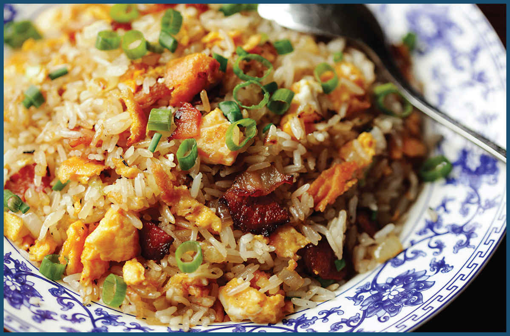
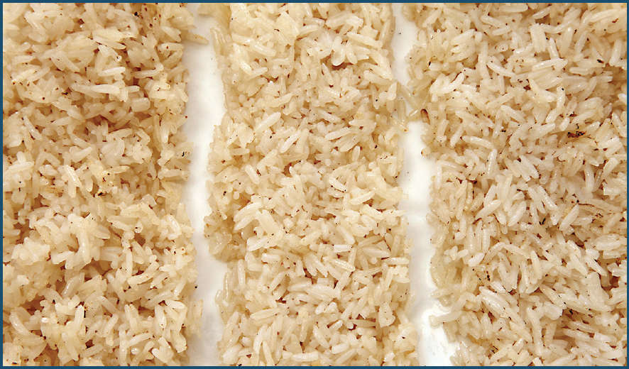

We eat a lot of rice at home, and a lot of rice means a lot of leftover rice, which means fried rice makes an appearance on our lunch or dinner table at least a couple times a month.
Virtually every country in East and Southeast Asia has its own version, all of which can be traced back to its origins in sixth- or seventh-century China, when it was first developed as a means of using up leftover rice. While fancy restaurant versions exist, fried rice is a peasant food with thriftiness at its core.
When making fried rice at home, I think of it more as a technique—a series of steps—than as a specific recipe. Thinking about it this way allows you to maximize fried rice’s potential as the ultimate leftover-user-upper. Scraps of roasted chicken? Into the fried rice it goes. That slab of corned beef from St. Patrick’s Day? Fry it up with rice! Four asparagus stalks and a handful of torn kale leaves? The perfect addition to a wokful of fried rice. Practically anything can make its way into the wok.
Myth-Busting Fried Rice
The number of rules that everyone says you simply must follow when making fried rice makes it the perfect subject for some hard-core testing and myth-busting.
Let’s get started.
Fried rice comes in many styles. In China (and more authentic Chinese restaurants in the States), it’s typically lightly seasoned with salt and perhaps a little soy sauce or another sauce, along with scant amounts of aromatics and meat. In the Chinese American tradition, you’ll find it made with bigger chunks of meat and much more sauce. Thai-style fried rice made with jasmine rice is frequently flavored with fish sauce, while in Indonesia it may be sweet soy sauce and shrimp paste. No matter how you season it, most folks agree upon one thing: each grain of rice should remain individual. Nobody wants to eat sticky, clumpy fried rice. So how do we get there?
Myth #1 • You Must Use Medium-Grain Rice
The Truth: The best rice is whatever you have left over to use up.
Perfect fried rice is all about texture. Strike that: perfect fried rice is all about using up leftover rice, followed by texture. In my testing I was looking for rice that had distinct grains, each with a slightly chewy fried exterior and a tender bite. I wanted grains that were separate enough from each other that you could taste and appreciate their texture, but still sticky enough that you could pick up small clumps with a pair of chopsticks or a spoon.
Fried rice recipes typically call for Chinese-style medium-grain rice, though Thai-style versions use fragrant jasmine and Japanese-style fried rice can even be made with short-grain sushi rice. I tried making fried rice with all of those, as well as with long-grain rice (standard Carolina and basmati rice) and par-boiled rice (like Uncle Ben’s). (I have not done any testing on brown, wild, or black rice varieties.)
I was expecting disasters from at least a couple of batches, but surprisingly, they all produced decent results. Longer-grain rice varieties tended to be the most troublesome, as they fell apart a little bit during stir-frying and lacked the plumpness that gives fried rice its signature chewy-tender texture, but the results were still more than passable and an excellent way to use up leftover rice.
These are my favorite types of rice for frying:
•Jasmine: A medium-grain Thai variety that has the perfect balance of stickiness (for easy eating) and individual grains (for superior texture). Jasmine rice brings its own aroma to the game, so it should be used in very light stir-fries where its flavor can shine.
•Medium-grain white rice: The variety you’ll most commonly see in Chinese restaurants. Like jasmine, medium-rice grains boast a great balance: They’re strong individuals but also good team players. White rice has less of a floral aroma than jasmine, which makes it a little more versatile.
•Sushi rice: Japanese-style sushi rice has a very short grain and tends to be stickier/starchier than medium-grain rices. This makes it a little bit more difficult to stir-fry without clumping, but the resulting texture is the chewiest of the lot, which can be a good thing.
Myth #2 • Use Day-Old Rice
The Truth: Day-old rice is best, but fresh rice is great too.
I’d always heard that fried rice is best made with day-old rice and that fresh rice will turn to mush if you try to fry it. But is this really true? And if so, what is it about the resting period that makes older rice superior to fresh rice?
As rice sits after cooking, a couple things happen. First, there’s evaporation: the rice gets drier. Second, we’ve got starch retrogradation: gelatinized starches that have swollen up and softened during cooking will recrystallize as they cool, turning the rice firm and less sticky. The same things happen with bread; in the past, I’ve found that most recipes that call for “stale” bread are actually really more interested in “dry” bread (see the stuffing recipe in The Food Lab, for instance).
I wasn’t sure what I was looking for with rice, stale or dry. So I tried it. Over and over and over again. To test dryness, I used batches of rice that I set under a table fan at room temperature, which I hoped would rapidly dry out the rice without giving it much of a chance to turn stale. To test staleness, I stored batches of rice for lengths of time varying from half an hour to 12 hours, very tightly covered on plates in the fridge, allowing their starches to recrystallize without drying out. I also stored rice the way most of us do: in not-well-sealed Chinese takeout containers. Presumably these batches would get both dry and stale.
I then stir-fried the batches, one after the other, in a little vegetable oil.
My results showed some very interesting twists. First off, all of the batches of rice that were under a fan (dried and not staled) worked out well. None of the very tightly wrapped batches worked, which indicates that dryness is an essential factor for fried rice. The batches that were stored loosely wrapped for times ranging between 1 hour and around 6 hours actually became more difficult to fry properly. After that, they got easier and easier; by hour 12, they were ideal.

But here’s the thing: Even freshly cooked rice worked great. In fact, it worked better than rice that had been stored loosely covered in the refrigerator for 1 to 6 hours. What gives? Most of my other tests indicated that dryness matters, but surely fresh rice is the moistest of the lot?
Well, not necessarily. Freshly cooked rice spread out on a plate will steam a great deal as its surface moisture is evaporated. That’s the important part. It’s the surface moisture that is going to cause your rice to rapidly suppress the temperature of the wok; it’s the surface moisture that’s going to cause your rice to stick together.
That explains why fresh rice and rice that’s been placed underneath a fan work well. With rice placed in the refrigerator, on the other hand, you slow down the evaporation process. Meanwhile, internal moisture from the grains will start to move outward, adding moisture to the surface of each grain and making the rice more difficult to fry. Eventually that surface moisture will evaporate again and the rice will become easier to fry.
Here are my recommendations for rice treatment, in order of preference:
Fanned rice: Rice that has been cooked, spread onto a tray, then placed under a fan for about an hour comes out dry but not stale—exactly what you want.
Fresh-cooked rice: So long as you spread the rice out on a plate or tray while it’s still hot and give it a few minutes to allow some surface moisture to evaporate, you can make excellent fried rice with fresh rice.
Day-old rice: Day-old rice tends to clump, so you’ll need to break it up by hand before stir-frying. It’s also drier internally than fresh rice, so you have to be faster with the stir-fry to ensure that it doesn’t become overly hard. That said, if you happen to have day-old rice, it’ll make excellent fried rice.
Myth #3 • You Must Rinse the Rice
The Truth: Even unrinsed rice works fine if it’s used the next day.
Excess starchiness is what causes rice to clump or turn mushy. This can be pronounced when using freshly cooked unrinsed rice, even when you allow excess moisture to evaporate. With freshly cooked rice, it’s best to rinse it before cooking. A quick dunk and shake in a bowl of cold water, or a 30-second rinse under a cold tap while agitating the rice, is plenty.
By the next day, however, the recrystallized starch is not nearly as sticky and clumpy, which means that day-old leftover rice will work fine, even it if wasn’t rinsed. That takes us to our next myth:
Myth #4 • You Must Break Up the Rice Before Cooking
The Truth: This one is true!
If you’re using rice that has had a chance to clump or get stale, it works best to break it up with your fingertips before it goes into the wok or to break it up with the bottom of a wok ladle once it’s in the wok. This will ensure that the rice separates into individual grains without breaking or getting crushed.
I did consider whether or not oiling the rice while it was still cold before it hit the wok was a good idea. It’s not: cold oil doesn’t spread as well as hot oil, so you end up using way more than you’d typically need. Best to break up the rice by hand and leave the oil for the wok.
Once the rice is broken up, you’re ready to cook. Fried rice is more forgiving than most stir-fries (unlike meat or green vegetables, rice is not easy to overcook), but it’s still a fast process. Make sure you have your other ingredients ready to go before putting the wok on the flame.
Myth #5 • Keep Things Hot. Very Hot.
The Truth: Ding! It’s true.
Here is where I’ve made the most fried rice mistakes in my life: not getting the wok hot enough and cooking too much rice at a time. Try it and see what happens. Then come back here after you’ve scraped out the solid clump of mushy rice from the center of your wok.
Cooking fried rice is not all that different from, say, searing chunks of beef for a beef stew: You want to make sure that the pan is ripping-hot before you add the rice, so that the exterior has a chance to sear and acquire some texture before the rice exudes too much internal moisture and ends up steaming instead of frying.
In a Chinese restaurant, with its jet-engine wok burners, this is pretty easy. Even a large batch of rice will sear just fine. Our Western burners typically have around one-tenth the heat output of wok burners. To compensate for this, I use two strategies.
First: preheat. I’m talking turn-on-the-fan-and-unplug-the-smoke-detectors hot. Second: cook in batches, adding no more than about a cup of rice at a time to the wok, stirring and tossing it as soon as it goes in to get it nicely coated in oil. You’re looking for rice that is starting to take on a toasty golden brown color, with a tight skin around each grain. This will most likely take a little bit longer than you expect it to, so be patient and keep tossing and stirring.
As each batch of rice is cooked, I transfer it to a bowl and set it aside. Once all the rice is cooked, I add it all back to the wok together.
Fried rice often features smoky wok hei flavor. If you want to achieve it, either stir-fry with an outdoor high-output setup (such as a turkey fryer or a hot charcoal grill with a wok insert; see here) or by using a torch (see here).
Myth #6 • Go Easy with the Add-Ins
The Truth: You can add as many add-ins as you’d like, provided you cook in batches.
Just as a plate of pasta is really about the pasta itself, not the sauce, fried rice is all about the rice. I’ll often make the simplest fried rice, using just onion, carrot, garlic, and scallion, along with a bit of ham, shrimp, chicken, or egg. The basic rule is that mix-ins should all be flavor enhancers, not stars unto themselves.
But, of course, all rules are meant to be broken, so if you feel like throwing the entire kitchen sink into the wok (or at least the entire contents of your fridge), don’t let me stop you. Just remember: as with all stir-fries, cook in small batches and consolidate ingredients as they cook before returning them to the wok. The chart on here will show you how to prepare some of my favorite ingredients for fried rice.
I almost always try to add some bright green elements to fried rice, whether that’s chopped green chiles; aromatics like cilantro, basil, or scallions; or fresh vegetables like peas or minced snap peas.
Myth #7 • Go Easy With the Sauce
The Truth: Please, please go easy with the sauce.
Some fried rice recipes call for massive amounts of soy sauce, oyster sauce, or hoisin sauce. This has never made much sense to me. Why go through the trouble of making sure your rice grains are dry and individual if you’re going to then turn around and sog them all up with extra sauce again? You end up with a clumpy, stodgy mess.
So long as you’re using good technique and high-quality rice, you don’t need a ton of sauce. For this batch, a small dash of soy sauce or a smidge of aromatic sesame oil can add fragrance without overpowering the smoky wok hei of perfectly fried rice. Oyster sauce, fish sauce, and other Asian sauces, like kecap manis (the Indonesian sweet soy sauce used in nasi goreng), will all work. Feel free to suit your own tastes. (Some poor misguided souls even like to stir-fry their rice with ketchup and Worcestershire sauce.)*
Rather than season fully with a sauce, I typically add a dash of kosher salt (and a touch of powdered MSG) to the wok. Dry salt will not add excess moisture, nor will it distract from other, more subtle flavors in the rice.
*I will not judge them, for their judgment shall come in the next life.